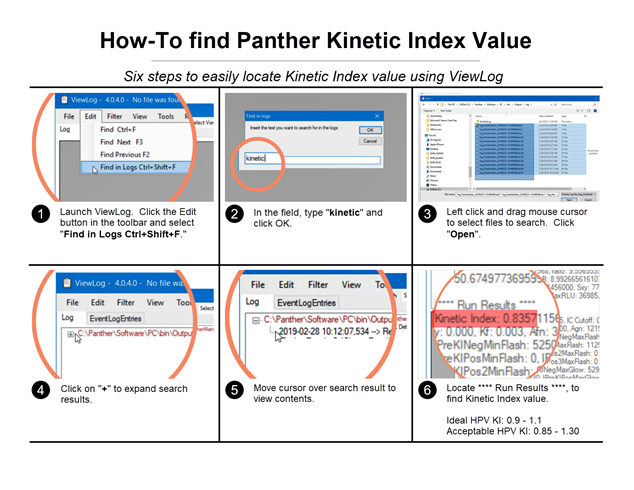
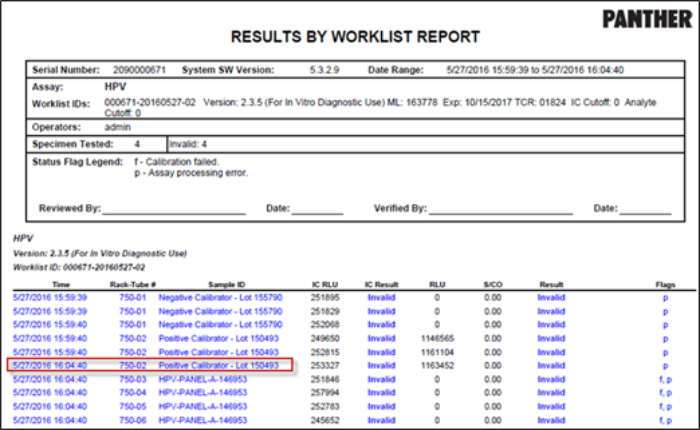
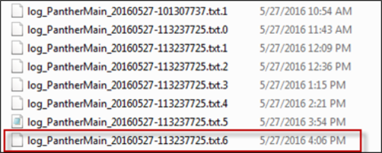
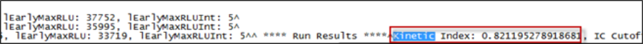
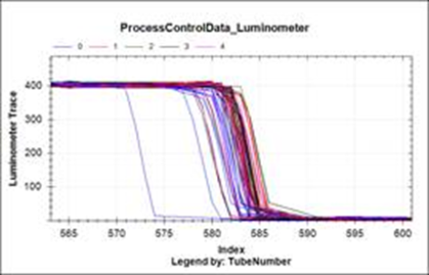
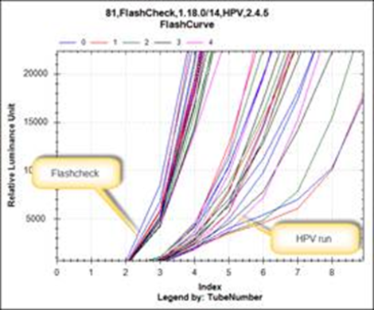
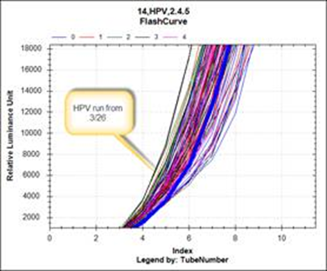
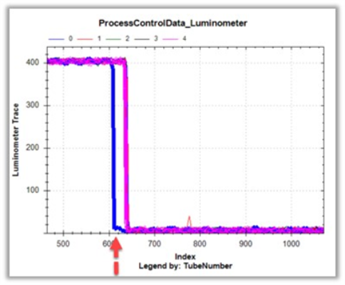
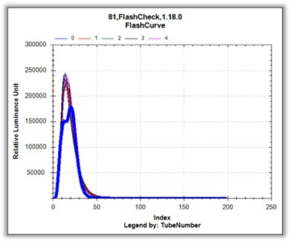
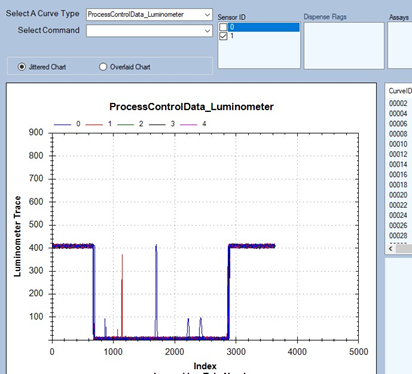

Error Code
None.
Table of Contents
Complaint Description
The Kinetic Index (KI) is the normalization factor determined for each run based upon the performance of the calibrators, to normalize flasher and glower signal to the ideal master curve.

Technical Support
- Kinetic Index is only used in the HPV and HPV GT assays.
- Request logs for a couple of HPV or HPV GT runs to review if KI is trending low or high.
Review Logs to Find the Kinetic Index
-
Open the Results Report, and find the date and time for the last calibrator.

-
In NotePad++, open the log_PantherMain file with a date/time at the same time or after the last calibrator.

-
Search the file for Kinetic Index.

-
See if the Kinetic Index is in the correct range for the assay:
- HPV: 0.85 – 1.30
- HPV GT: 0.85 – 1.55
KI is High
Check if the lab temperature is approaching 30C.
Check the temperature where the AD bottles are stored. If the bottles are warm, it can cause the KI to be high.
Review logs for luminometer curves to see if there are issues with the AD dispense.
Refer to AD1 and AD2 – Good Curves vs. Bad Curves.
KI is Low
Check if the lab temperature is <15C.
Check the temperature where the AD bottles are stored. If the bottles are cold, it can cause the KI to be low.
Instruct customer to check the AD bottles, caps, and connectors in the Universal Fluids Drawer.
Review logs for luminometer curves to see if there are issues with the AD dispense.
Refer to AD1 and AD2 – Good Curves vs. Bad Curves.
Next Steps
Review case history for previous KI errors. Notify FSE if there were recent cases.
Instruct customer to monitor and upload logs again if runs keep failing.
Field Service
KI Issues Seen by FSE
Looks like a micro fracture or leak in the AD2 LCMP.
Zoomed in a lot on the OLV, and all the delayed light offs correspond with the injection.
Have not looked into OLV acquisition rate vs. luminometer acquisition rate yet.



There is a slight leak: see blue line on first dispense immediately after priming.

Which corresponds to:

Resolution
The fittings need to be snug. Tighten them down more.

Any pullback >2600 should be reviewed by TSE Technical Service Engineer..
Technical Service Engineer..
 button at the top of the page to send feedback, comments, or change requests.
button at the top of the page to send feedback, comments, or change requests.